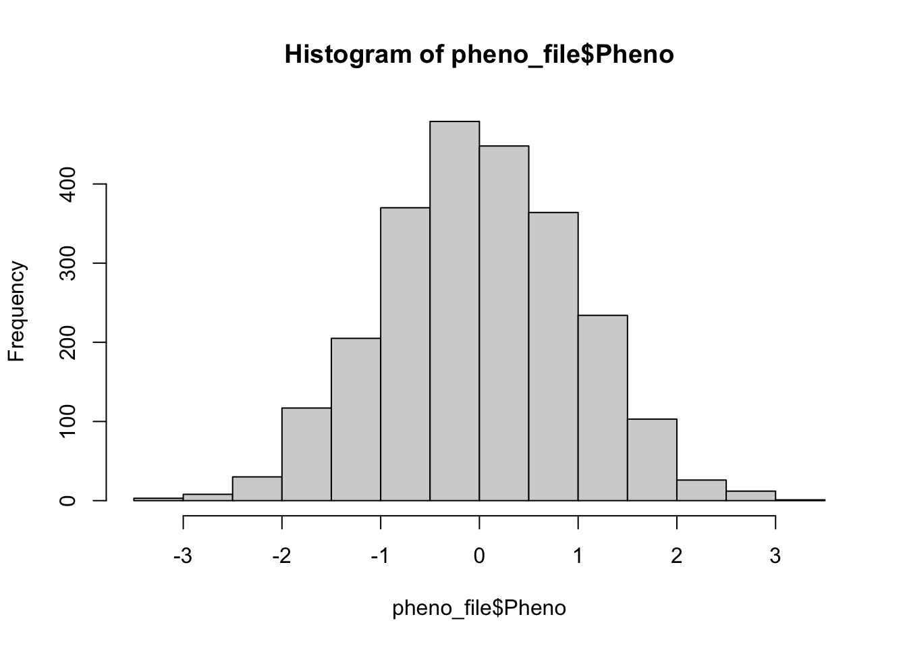
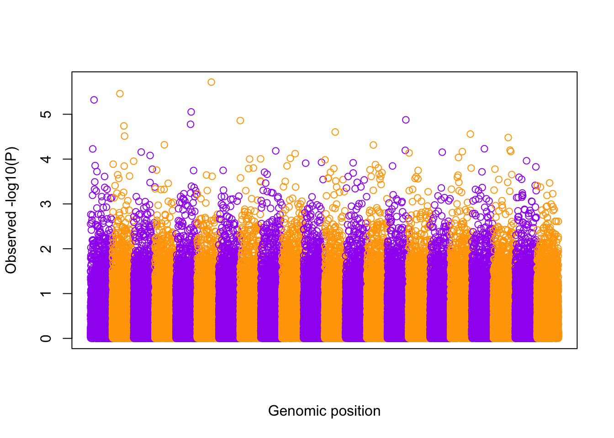
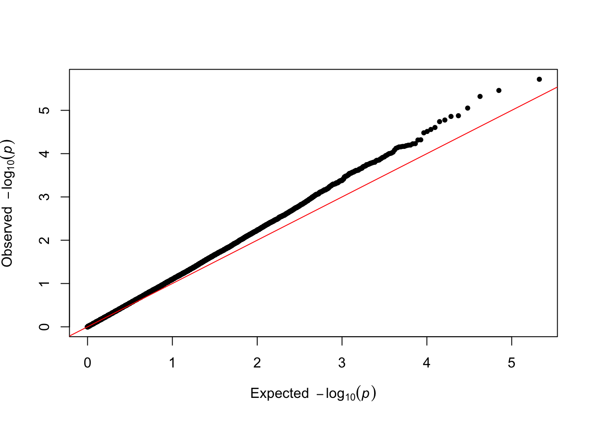
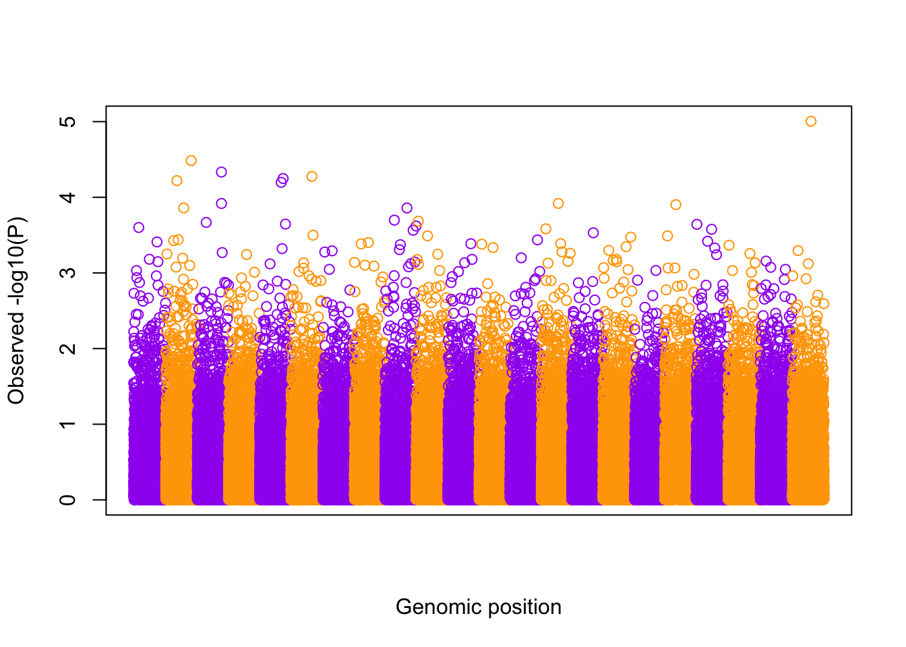
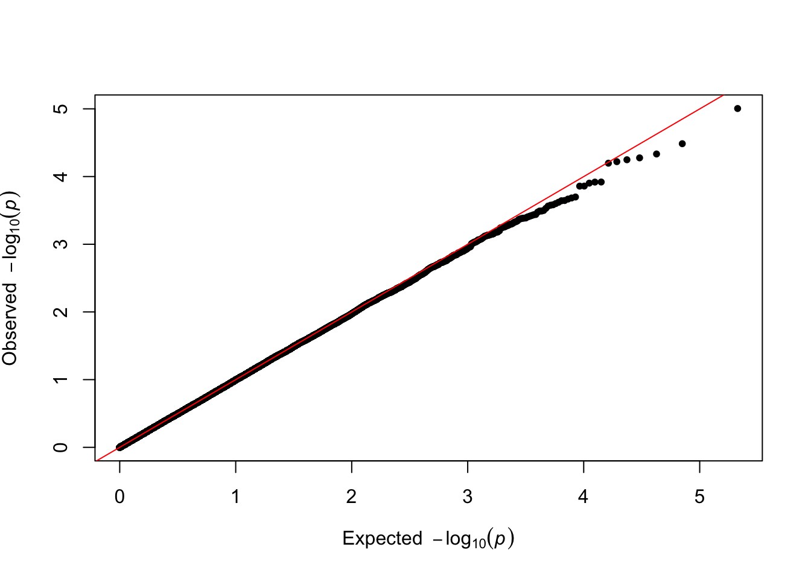

library(data.table)
library(dplyr)
library(qqman)
library(ggplot2)
library(glue)Practical 3 Key - GWAS in Samples with Structure & Using REGENIE
Before you begin:
- Make sure that R is installed on your computer
- For this lab, we will use the following R libraries:
Introduction
What we’re testing: How do we handle population structure and relatedness in GWAS? We’ll compare naive PLINK analysis with REGENIE’s mixed model approach to see how structure affects results.
We will be analyzing a simulated data set which contains sample structure to better understand the impact it can have in GWAS analyses if not accounted for. We will perform GWAS on a quantitative phenotype which was simulated with high heritability and polygenic.
The file “sim_rels_pheno.txt”” contains the phenotype measurements for a set of individuals and the file “sim_rels_geno.bed” is a binary file in PLINK BED format with accompanying BIM and FAM files which contains the genotype data at null variants (i.e. not associated with the phenotype).
How should we expect the QQ/Manhatthan plots to look like under this scenario?
Data preparation
Let’s first load the simulated data into the R session. We need to define the path to the directory containing the phenotype and genotype files (change the path to the files location).
files_dir <- "/SISGM19/data/" Also specify the paths to the PLINK2 and REGENIE binaries:
plink2_binary <- "/SISGM19/bin/plink2"
regenie_binary <- "/SISGM19/bin/regenie" We can now read the files (recall the PLINK BED file is a binary file):
pheno_file <- fread(glue("{files_dir}/sim_rels_pheno.txt"), header = TRUE)
head(pheno_file, 3) FID IID Pheno
1: 2307 2307 0.009989201
2: 379 379 -1.452527735
3: 478 478 0.110971665sim_bim <- fread(glue("{files_dir}/sim_rels_geno.bim"), header = FALSE)
head(sim_bim, 3) V1 V2 V3 V4 V5 V6
1: 1 1:12000011:A:C 0 12000011 A C
2: 1 1:12000012:A:C 0 12000012 A C
3: 1 1:12000019:T:C 0 12000019 T Csim_fam <- fread(glue("{files_dir}/sim_rels_geno.fam"), header = FALSE)
head(sim_fam, 3) V1 V2 V3 V4 V5 V6
1: 2307 2307 0 0 1 -9
2: 379 379 0 0 2 -9
3: 478 478 0 0 1 -9Exercises
Here are some things to try:
- Examine the dataset:
- How many samples are present? Use
str
str(sim_fam)Classes 'data.table' and 'data.frame': 2400 obs. of 6 variables:
$ V1: int 2307 379 478 1545 990 1907 369 1694 2137 2314 ...
$ V2: int 2307 379 478 1545 990 1907 369 1694 2137 2314 ...
$ V3: int 0 0 0 0 0 0 0 0 0 0 ...
$ V4: int 0 0 0 0 0 0 0 0 0 0 ...
$ V5: int 1 2 1 1 1 2 2 1 2 1 ...
$ V6: int -9 -9 -9 -9 -9 -9 -9 -9 -9 -9 ...
- attr(*, ".internal.selfref")=<externalptr> - How many SNPs? In how many chromosomes? Use
strandtable
str(sim_bim)Classes 'data.table' and 'data.frame': 106134 obs. of 6 variables:
$ V1: int 1 1 1 1 1 1 1 1 1 1 ...
$ V2: chr "1:12000011:A:C" "1:12000012:A:C" "1:12000019:T:C" "1:12000027:C:T" ...
$ V3: int 0 0 0 0 0 0 0 0 0 0 ...
$ V4: int 12000011 12000012 12000019 12000027 12000036 12000061 12000073 12000074 12000117 12000136 ...
$ V5: chr "A" "A" "T" "C" ...
$ V6: chr "C" "C" "C" "T" ...
- attr(*, ".internal.selfref")=<externalptr> table(sim_bim$V1)
1 2 3 4 5 6 7 8 9 10 11 12 13 14 15 16
4918 4857 4813 4772 4810 4914 4840 4696 4790 4906 4782 4756 4803 4671 4814 4869
17 18 19 20 21 22
4632 4834 4908 4942 4947 4860 - Examine the phenotype data:
- How many individuals in the study have measurements?
table(is.na(pheno_file$Pheno))
FALSE
2400 - Plot a histogram to show the distribution of the phenotype. Use the
hist()function
hist(pheno_file$Pheno)
- With PLINK, perform association mapping between the phenotype and the variants in the PLINK BED genotype file. Only perform association test on SNPs that pass the following quality control threshold filters:
- minor allele frequency (MAF) > 0.01
- at least a 99% genotyping call rate (less than 1% missing)
- HWE p-values greater than 0.001
# first fill in the thresholds to use for each filter
filter_maf = 0.01
filter_missing_rate = 0.01
filter_hwe = 0.001
cmd <- glue('{plink2_binary} --bfile "{files_dir}/sim_rels_geno" --pheno "{files_dir}/sim_rels_pheno.txt" --pheno-name Pheno --maf {filter_maf} --geno {filter_missing_rate} --hwe {filter_hwe} --glm allow-no-covars --out gwas_plink')
system(cmd)The results of the GWAS are stored in gwas_plink.Pheno.glm.linear.
- Make a Manhattan plot of the association results. Make sure to check what information is stored in the PLINK output file (using
str()).
plink.gwas <- fread("gwas_plink.Pheno.glm.linear", header = TRUE)
str(plink.gwas)Classes 'data.table' and 'data.frame': 105886 obs. of 16 variables:
$ #CHROM : int 1 1 1 1 1 1 1 1 1 1 ...
$ POS : int 12000011 12000012 12000019 12000027 12000036 12000061 12000073 12000074 12000117 12000136 ...
$ ID : chr "1:12000011:A:C" "1:12000012:A:C" "1:12000019:T:C" "1:12000027:C:T" ...
$ REF : chr "C" "C" "C" "T" ...
$ ALT : chr "A" "A" "T" "C" ...
$ PROVISIONAL_REF?: chr "Y" "Y" "Y" "Y" ...
$ A1 : chr "A" "A" "T" "C" ...
$ OMITTED : chr "C" "C" "C" "T" ...
$ A1_FREQ : num 0.12 0.187 0.402 0.12 0.415 ...
$ TEST : chr "ADD" "ADD" "ADD" "ADD" ...
$ OBS_CT : int 2400 2400 2400 2400 2400 2400 2400 2400 2400 2400 ...
$ BETA : num 0.0122 -0.018 -0.0849 0.0125 0.0111 ...
$ SE : num 0.0438 0.0362 0.0284 0.0435 0.0288 ...
$ T_STAT : num 0.279 -0.497 -2.992 0.288 0.387 ...
$ P : num 0.78 0.6192 0.0028 0.7731 0.6991 ...
$ ERRCODE : chr "." "." "." "." ...
- attr(*, ".internal.selfref")=<externalptr> plot(
x = 1:nrow(plink.gwas),
y = -log10(plink.gwas$P),
col = c("orange", "purple")[1 + plink.gwas$`#CHROM` %% 2],
xaxt = "n", xlab = "Genomic position", ylab = "Observed -log10(P)"
)
- Make a Q-Q plot of the association results.
qq(plink.gwas$P)
- Compute the genomic control inflation factor \(\lambda_{GC}\) based on the p-values. Is there evidence of possible inflation due to confounding?
chisq.values <- qchisq(plink.gwas$P, 1, lower.tail = FALSE)
median(chisq.values)/0.456[1] 1.145772- Now we will run REGENIE to perform a GWAS of the phenotype using a whole genome regression model. We first want to extract a set of high quality variants for the Step 1 null model fitting. Using PLINK, apply QC filters to remove variants with MAF below 5%, missingness above 1%, HWE p-value below 0.001, minor allele count (MAC) below 20. We will use
--write-snplistto store list of variants passing QC without making a new BED file.
# first fill in the thresholds to use for each filter
filter_maf = 0.05
filter_missing_rate = 0.01
filter_hwe = 0.001
filter_mac = 20
cmd <- glue('{plink2_binary} --bfile "{files_dir}/sim_rels_geno" --pheno "{files_dir}/sim_rels_pheno.txt" --pheno-name Pheno --maf {filter_maf} --geno {filter_missing_rate} --hwe {filter_hwe} --mac {filter_mac} --write-snplist --out qc_pass')
system(cmd)This produces a file qc_pass.snplist containing a list of variant IDs that pass the QC filters.
If REGENIE software is installed on your machine
- Run REGENIE Step 1 to fit the null model and obtain polygenic predictions using a leave-one-chromosome-out (LOCO) scheme.
cmd <- glue('{regenie_binary} --bed "{files_dir}/sim_rels_geno" --phenoFile "{files_dir}/sim_rels_pheno.txt" --phenoCol Pheno --qt --step 1 --loocv --bsize 1000 --extract qc_pass.snplist --out gwas_regenie')
system(cmd)The LOCO polygenic predictions for the phenotype are stored in gwas_regenie_1.loco.
- Run REGENIE Step 2 to perform association testing.
cmd <- glue('{regenie_binary} --bed "{files_dir}/sim_rels_geno" --phenoFile "{files_dir}/sim_rels_pheno.txt" --phenoCol Pheno --qt --step 2 --bsize 400 --pred gwas_regenie_pred.list --out step2_gwas_regenie')
system(cmd)The REGENIE summary statistics will be in step2_gwas_regenie_Pheno.regenie.
- Generate Manhatthan and Q-Q plots based on the REGENIE association results and compute \(\lambda_{GC}\). Compare with output from Questions 4-6.
- Compare: REGENIE results should show much better calibration (QQ plot closer to diagonal, lambda closer to 1) compared to PLINK because mixed models account for relatedness.
regenie.gwas <- fread("step2_gwas_regenie_Pheno.regenie", header = TRUE)
str(regenie.gwas)Classes 'data.table' and 'data.frame': 106134 obs. of 13 variables:
$ CHROM : int 1 1 1 1 1 1 1 1 1 1 ...
$ GENPOS : int 12000011 12000012 12000019 12000027 12000036 12000061 12000073 12000074 12000117 12000136 ...
$ ID : chr "1:12000011:A:C" "1:12000012:A:C" "1:12000019:T:C" "1:12000027:C:T" ...
$ ALLELE0: chr "C" "C" "C" "T" ...
$ ALLELE1: chr "A" "A" "T" "C" ...
$ A1FREQ : num 0.12 0.187 0.402 0.12 0.415 ...
$ N : int 2400 2400 2400 2400 2400 2400 2400 2400 2400 2400 ...
$ TEST : chr "ADD" "ADD" "ADD" "ADD" ...
$ BETA : num 0.00851 -0.01943 -0.0747 -0.023 0.01463 ...
$ SE : num 0.0419 0.0346 0.0272 0.0416 0.0275 ...
$ CHISQ : num 0.0413 0.3153 7.5548 0.3058 0.2823 ...
$ LOG10P : num 0.0762 0.2407 2.2229 0.2364 0.2254 ...
$ EXTRA : logi NA NA NA NA NA NA ...
- attr(*, ".internal.selfref")=<externalptr> plot(
x = 1:nrow(regenie.gwas),
y = regenie.gwas$LOG10P,
col = c("orange", "purple")[1 + regenie.gwas$CHROM %% 2],
xaxt = "n", xlab = "Genomic position", ylab = "Observed -log10(P)"
)
qq(10^-regenie.gwas$LOG10P)chisq.values <- qchisq(10^-regenie.gwas$LOG10P, 1, lower.tail = FALSE)
median(chisq.values)/0.456[1] 0.9940042If REGENIE software does not run on your machine
- We will use an implementation of REGENIE in R. Download it here and change the path of the variable
regenie_scriptto the path of the script on your machine
regenie_script <- "data/run_regenie.r"
source(regenie_script)- We now run REGENIE Step 1 to fit the null model and obtain polygenic predictions using a leave-one-chromosome-out (LOCO) scheme.
loco_pred <- run_regenie_step1(
bedfile = paste0(files_dir, "/sim_rels_geno"),
phenofile = paste0(files_dir, "/sim_rels_pheno.txt"),
phenocol = "Pheno",
bsize = 1000,
extract = "qc_pass.snplist"
) Analyzing 2400 samples for phenotype Pheno
Using genotype file prefix: /Users/joelle.mbatchou/SISG/2026/SISG2026_Association_Mapping/data//sim_rels_geno
#Variants included = 97387
Running REGENIE level 0 into 110 blocks
user system elapsed
502.115 22.542 81.999
Running REGENIE level 1 with 550 ridge predictors
user system elapsed
1.854 0.045 1.990
Rsq for each ridge parameter at level 1: 0.07788307 0.08313518 0.09104799 0.09699941 0.09707784
MSE for each ridge parameter at level 1: 0.932345 0.9199879 0.9144755 0.9133895 0.9315208
Computing LOCO predictions
user system elapsed
1.627 0.020 1.695 This function will return the LOCO polygenic predictions for the phenotype.
- Run REGENIE Step 2 to perform association testing.
sumstats_regenie <- run_regenie_step2(
bedfile = paste0(files_dir, "/sim_rels_geno"),
phenofile = paste0(files_dir, "/sim_rels_pheno.txt"),
phenocol = "Pheno",
bsize = 200,
loco.mat = loco_pred
) Analyzing 2400 samples for phenotype Pheno
Using genotype file prefix: /Users/joelle.mbatchou/SISG/2026/SISG2026_Association_Mapping/data//sim_rels_geno
#Variants tested for association = 106134
Conditioning on LOCO polygenic predictions from REGENIE step 1
Running association tests...str(sumstats_regenie)Classes 'data.table' and 'data.frame': 106134 obs. of 12 variables:
$ CHROM : int 1 1 1 1 1 1 1 1 1 1 ...
$ GENPOS : int 12000011 12000012 12000019 12000027 12000036 12000061 12000073 12000074 12000117 12000136 ...
$ ID : chr "1:12000011:A:C" "1:12000012:A:C" "1:12000019:T:C" "1:12000027:C:T" ...
$ ALLELE0: chr "C" "C" "C" "T" ...
$ ALLELE1: chr "A" "A" "T" "C" ...
$ A1FREQ : num 0.12 0.187 0.402 0.12 0.415 ...
$ N : int 2400 2400 2400 2400 2400 2400 2400 2400 2400 2400 ...
$ TEST : chr "ADD" "ADD" "ADD" "ADD" ...
$ BETA : num 0.00851 -0.01943 -0.0747 -0.023 0.01463 ...
$ SE : num 0.0419 0.0346 0.0272 0.0416 0.0275 ...
$ CHISQ : num 0.0413 0.3153 7.5548 0.3058 0.2823 ...
$ LOG10P : num 0.0762 0.2407 2.2229 0.2364 0.2254 ...
- attr(*, ".internal.selfref")=<externalptr> This function returns a data frame containing the REGENIE summary statistics.
- Generate Manhatthan and Q-Q plots based on the REGENIE association results and compute \(\lambda_{GC}\). Compare with output from Questions 4-6.
- Compare: REGENIE results should show much better calibration (QQ plot closer to diagonal, lambda closer to 1) compared to PLINK because mixed models account for relatedness.
plot(
x = 1:nrow(sumstats_regenie),
y = sumstats_regenie$LOG10P,
col = c("orange", "purple")[1 + sumstats_regenie$CHROM %% 2],
xaxt = "n", xlab = "Genomic position", ylab = "Observed -log10(P)"
)qq(10^-sumstats_regenie$LOG10P)
chisq.values <- qchisq(10^-sumstats_regenie$LOG10P, 1, lower.tail = FALSE)
median(chisq.values)/0.456[1] 0.9940056Key Takeaways from This Practical
Concepts you should understand:
- Genomic control inflation: \(\lambda_{GC}\) > 1.05 suggests population stratification/relatedness bias
- PLINK limitations: Standard regression assumes unrelated samples, gets inflated with structure
- Mixed models: REGENIE accounts for relatedness through random effects in Step 1
- LOCO procedure: Leave-one-chromosome-out avoids proximal contamination in polygenic predictions
- QQ plots as diagnosis: Deviation from diagonal reveals unwanted correlations in test statistics
Why this matters:
- False positives: Inflation from structure can lead to spurious associations if not corrected
- Different methods: PLINK finds structure-driven signals; REGENIE accounts for it
- Sample quality: Knowing your relatedness structure is essential for GWAS design
Next session: We’ll see how to test rare variants using different strategies when single-SNP tests fail.